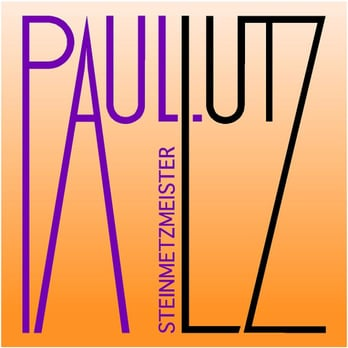

Steinmetzmeister
aus Leidenschaft und Überzeugung
NEU: Ab sofort in Landeck

Steinmetz LutzSteinmetzmeister
aus Leidenschaft und Überzeugung
NEU: Ab sofort in Landeck
Wir gestalten klassische und moderne Grabmale mit hochwertigen Natursteinen. Dabei setzen wir auf langlebige Materialien und moderne Ausführung.
Fein gearbeitete Schriftzüge, Bilder und Ornamente werden direkt vor Ort eingearbeitet. Auch Sonderwünsche wie Symbole oder persönliche Texte sind möglich.
Von der ersten Planung bis zur fachgerechten Montage begleiten wir Sie persönlich. Unser Service umfasst Lieferung, Aufbau und Pflegeberatung.
Telefon 0676 / 310 1989
www.lutz-stein.at